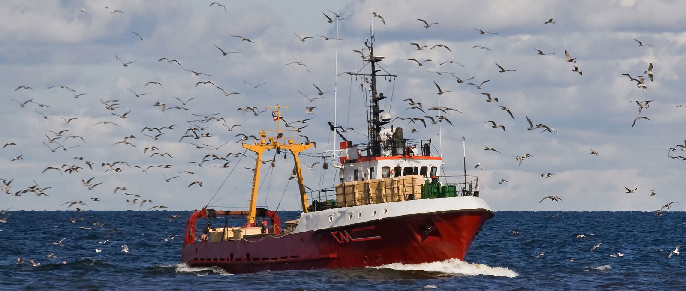

Centollo
El rey del Cantábrico, por tallas.
VivoCocido
Centollo, nécora, bogavante y langosta en viveros de agua de mar. Servimos a restaurantes, pescaderías y particulares de toda España con nuestra propia flota de camiones vivero.
Trabajamos producto del Cantábrico y lo mejor de los principales puertos europeos, siempre controlado desde que sale del agua hasta que llega a tus manos.
El rey del Cantábrico, por tallas.
Pequeña o grande, intensa y sabrosa.
El bugre asturiano y bogavante azul.
De las más valoradas de nuestra cocina.
Carne abundante, por tallas.
Por calibres, para plancha o cocida.
Para los paladares más exigentes.
Carne de centollo, txangurro, croquetas, zamburiñas.
Disponibilidad y precio según temporada y lonja. Pregúntanos por WhatsApp o por teléfono.
Restaurantes, marisquerías, pescaderías y supermercados confían en nosotros para tener producto vivo todos los días.

El marisco más fresco, las entregas más eficaces y controles de calidad periódicos: esos son nuestros tres pilares.

Nuestros barcos y los mejores puertos europeos, respetando tallas mínimas y la pesca responsable.

Instalaciones en el corazón del puerto con oxígeno y frío para mantener el marisco vivo y en perfecto estado.
Camiones vivero y furgonetas isotérmicas con frío y oxigenación a toda España.

EL MUSEL, S.L. nació en 1990 en el puerto de Gijón. Desde entonces nos dedicamos a la importación, exportación y venta de marisco vivo y congelado, con un equipo que conoce el oficio y lo vive con pasión.
Hoy somos proveedores de restaurantes y negocios de toda España y participamos en ferias como el Salón Gourmets de Madrid.
Asturias · Madrid · Sevilla · Zaragoza · Vigo · y más
| Lunes | 08:00 – 15:00 |
| Martes | 08:00 – 15:00 |
| Miércoles | 09:00 – 13:00 · 15:00 – 19:00 |
| Jueves | 09:00 – 13:00 · 15:00 – 19:00 |
| Viernes | 09:00 – 13:00 · 15:00 – 19:00 |
| Sábado | 09:00 – 13:00 |
| Domingo | Cerrado |